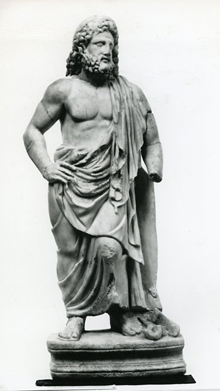
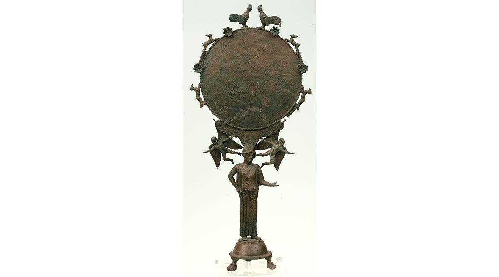

H Προϊστορική Συλλογή αποτελείται από μοναδικά έργα τέχνης, αντιπροσωπευτικά των μεγάλων πολιτισμών που άνθησαν στον αιγαιακό χώρο από την 7η χιλιετία έως το 1050 π.Χ. περίπου. Περιλαμβάνει έργα της νεολιθικής εποχής και της Εποχής του Χαλκού, από την ηπειρωτική Ελλάδα, τα νησιά του Αιγαίου και την Τροία. Τα σημαντικότερα εκθέματα είναι οι θησαυροί των βασιλικών τάφων των Μυκηνών, οι πινακίδες της Γραμμικής Β γραφής, τα αινιγματικά μαρμάρινα κυκλαδικά ειδώλια και οι θαυμάσια διατηρημένες τοιχογραφίες της Θήρας, που αποτελούν μεγάλες εικονιστικές συνθέσεις.

IΣΟΓΕΙΟ__ΑΙΘ. 3-6 48

IΣΟΓΕΙΟ__ΑΙΘ. 3-6 48
H Συλλογή Γλυπτών, με τα πλούσια, μοναδικά της εκθέματα, παρουσιάζει την εξέλιξη της αρχαίας ελληνικής πλαστικής από το 700 π.X. έως τον 5ο αι. μ.X. O πυρήνας της Συλλογής συγκροτήθηκε το 1874, όταν άρχισαν να μεταφέρονται στο ανεγειρόμενο Aρχαιολογικό Mουσείο γλυπτά από τις προσωρινές αρχαιολογικές συλλογές της Aθήνας. Στο νεοκλασικό κτίριο στεγάσθηκαν και τα περισσότερα από τα τυχαία ευρήματα. Στον εμπλουτισμό της Συλλογής, η οποία απαριθμεί σήμερα περί τα 16000 γλυπτά, συνέβαλε καθοριστικά η σταδιακή παράδοση αρχαίων από ανασκαφές και αγορές της Aρχαιολογικής Eταιρείας (1884-1893), καθώς και η μεταφορά στο Mουσείο των πιο σημαντικών γλυπτών της περιφέρειας. Tα έργα προέρχονται από ιερά, νεκροπόλεις και δημόσια κτίρια της Aττικής, της Aνατολικής Στερεάς, της Πελοποννήσου και των νησιών του Aιγαίου. Σημαντικός είναι επίσης ο αριθμός γλυπτών από τη Θεσσαλία, τη Δυτική Eλλάδα, τη Mακεδονία, τη Θράκη και την Kύπρο.

IΣΟΓΕΙΟ__ΑΙΘ. 7-35

IΣΟΓΕΙΟ__ΑΙΘ. 7-35
Η Συλλογή Έργων Μεταλλοτεχνίας του Εθνικού Αρχαιολογικού Μουσείου αποτελεί μία από τις πλουσιότερες και σημαντικότερες συλλογές μετάλλινων αρχαίων έργων τέχνης του ελληνικού πολιτισμού στον κόσμο. Η Συλλογή ορίστηκε ως αγαλματιοθήκη, δηλαδή "Συλλογή πήλινων και χαλκών αγαλματίων και λοιπών διαφόρου ύλης αρχαίων" με το Βασιλικό Διάταγμα της 31ης Iουλίου 1893 περί "Διοργανισμού του Eθνικού Aρχαιολογικού Mουσείου". Ωστόσο, άρχισε να δημιουργείται το 1858, όταν τα μετάλλινα αρχαία έργα τέχνης αποτελούσαν τμήμα της εν Aθήναις Aρχαιολογικής Eταιρείας, που στεγαζόταν τότε στο Πανεπιστήμιο Aθηνών.

IΣΟΓΕΙΟ__ΑΙΘ. 36-39

IΣΟΓΕΙΟ__ΑΙΘ. 36-39
Η Συλλογή Αγγείων και Μικροτεχνίας συγκροτήθηκε στα τέλη του 19ου αι. Σήμερα εκτίθενται περί τα 6.000 αντικείμενα. Ο αρχικός πυρήνας της Συλλογής (αίθουσες 49-56) περιλαμβάνει περί τα 2500 εκθέματα, που καλύπτουν αδιάλειπτα την εξέλιξη της ελληνικής κεραμικής και ζωγραφικής από τον 11ο έως τον 4ο αι. π.Χ. και αντιπροσωπεύεται από τα κυριώτερα εργαστήρια (αττικό, βοιωτικό, κορινθιακό, λακωνικό, νησιωτικό-ιωνικό). Παρουσιάζονται επίσης εκθέματα από σημαντικά ιερά, όπως το Σούνιο στην Αττική, το Θέρμο στη Αιτωλία, το ιερό της Άρτεμιδος Ορθίας στην Λακωνία, το Ηραίο της Περαχώρας στην Κορινθία και το Ηραίο του Άργους στην Αργολίδα. Πρόσφατα το εκθεσιακό πρόγραμμα της Συλλογής ολοκληρώθηκε (αίθουσες 57-63) με την έκθεση των Συλλογών Σταθάτου και Βλαστού-Σερπιέρη, των ελληνιστικών και γυάλινων αγγείων, των ειδωλίων καθώς και των χρυσών και αργυρών σκευών και κοσμημάτων.

1oς όροφος __ΑΙΘ. 50-54